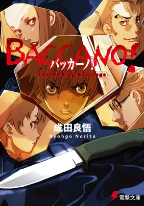

| Quick Facts | |
|---|---|
 | |
| Season: | X |
| Contract: | Novelist Special |
| Contractor: | Frazzle |
| Completed: | 3/? Volumes |
| Format: | Light Novel |
| Author: | Ryougo Narita |
| Date: | 2003 |
| Genre: | Historical, Mafia, Fantasy |
| Link: | Anilist |
Welcome to this review about Baccano!, my first Light Novel I ever read ! It took me some time to choose this one for the Honzuki Special, I tried various ones and this is the LN I went with, because it doesn't have very dumb character or a harem holder... The choice was easy to make after all. Reading this was quite an adventure, I would have never thought it takes that much time to read a volume... Maybe it's because I'm not that fluent in English, but I think it took me like 13 hours or so per volume. Anyway, let's dive into it.
What caught my eye quickly is the way the novel is written. Everything is narrated at first person, and the main character is obviously lost. And a few pages later, we're gone out of him, and fall into the story of an alchemist, while a few paragraphs later, we're completely out of the point, following the actions of Mafiosi. I found it quite difficult to follow everything, since there is a certain amount of characters, and the point of view (and point of thoughts too) changes very often. I found myself reading back several paragraphs because I couldn't understand who was who... That explains the 13 hours.
The later events were quite surprising, and I loved exploring the outcomes of the events. I'll try not to spoil that much, but my favorite development of the first volume was seeing the Firo and Ennis slowly growing up in their own way, and get to understand immortality better, and see what immortality changed in the underground. It somewhat became philosophical when it explores what people could do with immortality, like Bagetta and the other Mafia that have to deal with this new issue. What really impressed me is the talent that Isaac and Miria have to do completely random things and still be so much relevant to the plot, without being serious at all (I mean, I'm not even sure they have brain cells, and the narrator thinks that too).I ended the volume 3 with Huey becoming more important, and I heard that they would leave New York later, but I think I would be even more lost in the amount of locations and characters if it really does.
The few illustration helped me picture what the illustrator thought about the characters, but they were always off with my imagination. Maybe it's because I'm used to read more books than LN, but I couldn't help picturing events in a "Gangs of New York" real movie style.
It might be because I am not used to Light Novel at all, but I felt a bit lost when reading it, and as I couldn't always read a lot of pages straight, I kept forgetting about previous events and characters. The overall style was pretty good though, and I liked the way it explores the fantasy of a 20th century.
I really don't know how to rate this since I have no reference, but I think I would grade it a 7/10.